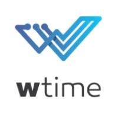
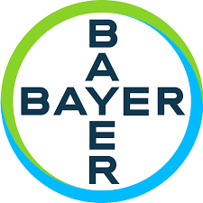

PORTIFÓLIO
SOBRE MIM
EXPERIÊNCIA PROFFISSIONAL
FORMAÇÃO
HABILIDADES
MEUS PROJETOS
CONTATO
Experiência Profissional
Desenvolvedor Web
Analista de Sistemas Protheus
Concreserv Concreto & Serviços
11/2021 á 04/2023
Desenvolvimento Web
Visual Studio Code
PHP
Bootstrap
HTML
CSS
Atividades
Desenvolvedor web do projeto Intranet Concreserv.
Suporte e gerenciamento de acesso sistema Protheus.
Gerenciamentode acessos de usuários de rede corporativa.
Gerenciamento de usuários no Portal do Cliente Concreserv.
Atendimento de Tickets.
Sistemas utilizados:
CRM IDEA
Zimbra
Totvs Protheus
Google Planilhas
Visual Studio Code
HeidiSQL
MySQL
Grafana
Apache
Google Drive
Microsoft Power BI
Bizify
Protheus Modulos:
Acessos
Tecnologia da Informação
Compras
Gestão de Frota
Combustiveis
Pneus
Almoxarifado
Acessos Portaria
Criação de documentos e manuais
Treinamento
Analista Service Desk
EVERIS NTTDATA
HOME OFFICE
11/2020 á 11/2021
Atividades
Atendimento Service Desk AMBEV
Suporte técnico nível avançado usuários AMBEV
Atendimento e resolução de Tickets
Resolução de problemas de usuários de forma eficaz e eficiente
Suporte e Treinamento de equipe
Escala e aos finais de semana
Documentação e manuais
Sistemas utilizados:
Windows
Service NOW
Meu Cliente
SAP
Logmein
Service NOW
Terminal PROMPT
Analista Service Desk LEFORTE

WTIME - HIBRIDO
11/2019 á 10/2020
Atividades
Atendimento Service Desk Hospital Leforte
Suporte técnico de nível avançado a funcionários e Medicos do Hospital Leforte
Atendimento de chamados
Resolução de problemas de usuários de forma eficaz e eficiente
Gerenciamento de usuários no Sistema MV Hospitalar
Gerenciamento de usuários no Active Diretcory
Treinamento de equipes e documentação de processos técnicos
Trabalho em conjunto com a equipe de Infraestrura e Sistemas
Sistemas Utilizados
Sistema MV
Sistema Tasy
GLPI
Gerenciamento de usuários no Active Diretcory
Treinamento de equipes e documentação de processos técnicos
Analista de Acessos
Projeto Goodyear
Stefanini Solutions
05/2015 á 04/2016
Atividades
Atendimento de chamados
Gerenciamento de usuários no Active Directory
Atendimento Internacional usuários da Colambia e Argentina
Resolução de chamados
Criação de Dashboard
Desenvolvimento de relatórios
Levantamento de Requisitos
Sistemas Utilizados
HP Service
Pacote Office
Lotus Note
Power BI
Suporte Tecnico em Telefonia
Projeto BAYER

Stefanini Solutions
10/2014 á 04/2015
Atividades
Atendimento de chamados
suporte presencial aos usuários em telefonia
Configuração e disponibilização de equipamentos
Treinamento de usuários
Gerenciamento de linhas telefonicas CLARO
Sistemas Utilizados
HP Service
IOS
Android
Blackberry
Suporte Tecnico Presencial
Projeto GOL
Stefanini Solutions
11/2012 á 09/2014
Atividades
Atendimento de tickets, suporte presencial ao Cliente GOL
Configuração e disponibilização de equipamentos.
Configuração e instalação de programas em geral.
Configuração e instalação de impressoras
Suporte aos funcionarios da GOL no Check-in do Aeroporto de Congonhas
Suporte aos Totens da GOL.
Treinamento de usuários.
Sistemas Utilizados
Windows
HP Service
Estágio em Suporte Tecnico.
SOFTON SISTEMAS INTELIGENTES
12/2011 á 10/2012
Atividades
Atendimento de tickets, suporte presencial.
Configuração e disponibilização de equipamentos.
Configuração e instalação de programas em geral.
Configuração e instalação de impressoras
Suporte aos funcionarios empresa
Visita aos clientes
Projeto Barisul
Sistemas Utilizados
Windows
Linux
Oracle
Estágio em suporte técnico
Fundação Getulio Vargas
11/2012 á 09/2014
Atividades
Suporte presencial aos alunos FGV
Configuração e disponibilização de equipamentos.
Configuração e instalação de programas em geral.
Configuração e instalação de impressoras
Suporte aos professores
Configuração de maquinas dos laboratórios
Treinamento de usuários.
Sistemas Utilizados
Windows
Pacote Office
HIRES BOOT
Analista de Relacionamento
Atento do Brasil Projeto Telefônica
06/2007 á 10/2010
Atividades
Atendimento de tickets reclamações em geral.
Contato com clientes telefonica.
Sistemas Utilizados
ATIS
CSO
Analista de Qualidade
4K Textil
04/2005 á 08/2006
Atividades
Analise de produtos texteis
Classificação
Controle de estoque.
Sistemas Utilizados
Calandra manual
Todos os direitos reservados.
Diogo Marcos Aguiar, Inc. © 2023
•
Termos de Serviço
•
Política de Uso
•
Política de Privacidade